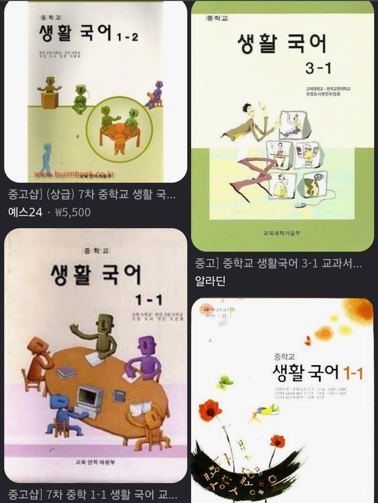

한자 자체는 나도 성인되어서야 각잡고 외웠고
지금 애들한테 필요한건
날짜에 대한 명칭, 도량형 단위, 사회에서 쓰이는 호칭 등
말그대로 생활에 쓰이는 국어를 가르치는 생활국어 부활이 시급함

한자 자체는 나도 성인되어서야 각잡고 외웠고
지금 애들한테 필요한건
날짜에 대한 명칭, 도량형 단위, 사회에서 쓰이는 호칭 등
말그대로 생활에 쓰이는 국어를 가르치는 생활국어 부활이 시급함
멍청이라기보다는 도파민중독인거같다
쇼츠같은 거에 어릴적부터 노출이 되어 갖고..조카놈 초딩 5땐가 드래곤볼 코믹스 읽어보라고 줬더니 글씨 많아서 읽기 싫다고 하더라...ㅋㅋㅋㅋ진짜 어이가;
둘 다 아님
모르는 게 잘못은 아니지만, 모르는 게 부끄러운 일이라는 걸 부정하는 시대인 거임
부모가 자식이 뭘 모르는 데 뻔뻔하게 나오면 가르치고 혼내야 라는데, 역으로 모를 수도 있지 왜 애 기죽게 뭐라 그래욧!!하는 포지션을 잡으니까 그럼. 애초에 애미애비도 똑같이 무식하게 자란거임
뭐 방사능 나왔냐?
왜 멍청해져 애들이
그냥 흔한 늙다리의 라떼는임. 우리때도 자기들 논어 사서삼경 모른다고 어른들한테 욕먹고 그 어른들도 자기어른한테 욕먹고 그냥 그런거임
호칭이 진짜 개박살난게 할아버지 외할아버지 이거는 지역+할아버지 쓴다쳐 근데 친척이진짜 개박살나있음.
나 아는집은 지역+할아버지말고 할아버지 본명+할아버지 이거로 교육시켰는데 난 좀 음 모르겠더라
삼촌부분이 그런데 원래 남자형제 결혼하면 작은(큰)아버지 해야하는데 계속 삼촌이라고 부르니까
작은(큰)어머니대신 숙모라고 부르더라고
이경우나 언니네부부가 결혼전부터 조카를 만났는데 결혼전이어서 이모부를 삼촌이라고 부르게했는데 결혼후에도 이모, 삼촌이라고 한다든가
외가집이 그렇게 나쁜뜻이 아닌데 왜 지랄났는지 모르겠음
난 격하게 공감한다 나도 한자 성인되고나서 취미로 익혔지만 그전보다 어휘력은 별로 는게 없음 학생때실력이 끝이었지
이런과목이있었어??
정석적인 한자,한문이아니라
천자문 처럼 한자 자체를 외우는게아니라
문자자체는 빼더라도 (하늘 천) 이런걸 위주로 교육시켜야
한다고봄
동감 굳이 한자를 쓰거나 읽는건 숫자나 요일 상하좌우 이정도로만 하고
어원 위주로 하는게 맞다 생각함
솔직히 배웠는데 오래되고 쓸 일도 없으니까 까먹은거지
아 예? 지~랄ㅋㅋ줴줴이야
놀랍게도 전부 가르침ㅋㅋ
우리앤 모르는데?< 학교에서 공부 ㅈㄴ안한거...
저걸 국어 비문학 과목으로 넣어서 공부시키면 안되나?
도덕은 안배우냐
그냥 나이먹으면서 꼰대돼서 그렇게 느끼는거임
이게 맞지 ㅋㅋ 시대에 따라 당연히 변하는 게 언어인데
도량형단위가 뭐가 필요함? 톳 자 리 되 말 이런게 필요?
ㄹㅇ 일상생활 할 때 형태소니 뭐니 이런거 알 필요가 있냐고
되, 말은 현재도 생각보다 많이 사용중이지
물건사면서 한번도 쓴적 없음
국어보단 도덕책을..
차피 어휘력은 알아서 는다...
뜻이 비슷한 단어끼리 공통으로 겹치는 글자 등으로
중학생 정도만 되어도 자동으로 유추가 되니 한자는 하면 좋지만, 그렇다고 필수는 아니라 생각함...
알아서 는다 = 주변의 사용을 보고 익힌다.
근데 문제는 주변에서 사용하고 있는걸 "알아듣게 안바꾸는 당신들이 문제야"라고 무지성 거부하는 케이스가 많은거지
유급제를 부활시켜야함. 과락도 넣고. 일정 학력이 되야 학년이 올라가야지 그냥 학년이 올라가면 안됨.
가뜩이나 저출산에 군대로 깎이는걸 사회진출 더 늦춰버리면 뒷감당 못할건데
생활국어 내용은 다 교육과정에 녹아서 있고 학생들 다 배웠음. 배웠지만 까먹었을뿐.
와 저건 대체 언제적거임ㅋㅋㅋ 생활국어는 또 뭐야ㅋㅋㅋ
장문의 글을 안읽어버릇해서 그래
개드립 확실히 노인네들 커뮤란거 여기 댓글 같은거 볼때마다 심하게 느껴짐 요즘것들 멍청하다 어쩐다 ㅋㅋㅋ 막상 자기들도 그런 소리 듣고 자랐었을텐데
요즘 애들 멍청하다 이거는 꼰대 소리가 아니라 통계가 증명함. 스맛폰의 영향이라기엔 우리 나라만 '추락' 중임. 학교에서 열심히 공부시키면 개지랄하는 나라가 되는 중이라서 그런걸까
무슨 통계?? PISA?
생활 국어는 필요 없을듯
걍 삼국지, 초한지 존나게 읽게하면 해결됨
교과목이 중요한게아니라 빠따가 중요하지
주입식 공부에대한 부작용만 너무 신경쓰는것도 한몫함 어릴때 강제로 해야되는 의무나 부조리도 경험해봐야하는데 요즘은 애들을 무균실에서 기르려해
사흘 나흘ㅋㅋㅋㅋ
난 도덕이 더 우선인거같다
모르는 단어가 있으면 알려주고 인사받으면 되는데
요즘은 감사는 커녕 조선족 취급해버리니
소크라테스때도 요즘 애들은 책을 안읽어서 버릇도 없고 바보라고 했음 그냥 흔한 라떼는임 지식의 기준이동이고
지식을 담아두는것에서 정보를 찾아내고 활용하는 방면으로 바뀌고 있는거
금일은 금요일이 아닙니다
천자문부터 외움? 성인되고 한문 다 까먹어서 뭐부터해야하나
사회 안배우나? 사회시스템에 대한 기초는 가르쳐야지..
그거랑 인사하는법 같은 기본도덕
전직 국어 교사임.
개붕이들이 열심이 열변을 토하는 모든 내용 이미 교과서에 다 담겨 있음. 한자어 어휘 분석도 교과서엔 없지만 필요에 의해 하는 교사들 많음.
학부모 개붕이 있으면 우주에서 가장 쉬운(제일 쉬운?) 어휘 책 추천함.
실생활에서 쓰이지 않는다고 배움에 필요 없다 쓸모 없다 하는 건 우매하건가
살아가는 데 도덕책 한권이면 손가락질 받진 않겠지만서도 교육의 가치를 폄하하려는 사람이 많네
한자를 굳이 배워야 하는가에 대해선 조금 회의적임
대신 어원을 배우는건 매우 중요 하다고 봄
예를 들어 학원 학교 학술 학생 등에서 학이 배울 학 이란건 무조건 알아야 된다 생각하는데. 굳이 학을 한자로 써야 된다 는 굳이 필요 없다 생각 함
어원만 알아도 모르는 단어 봤을때 8-90퍼는 직감적으로 때려 맞출 수 있음
생활국어는 뭐냐 ㄷㄷ
그냥 가면갈수록 애들이 멍청해져서 그래..